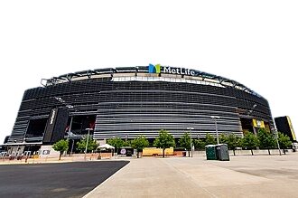

Mais |

Menu


Parceiros / Patrocinadores
Todos os Direitos Reservados
|
| Home | | Sobre | | Países | Mais | |
 | ||||
|
Menu |
O Brasil, comandado pelo técnico Carlo Ancelotti, encerrou sua fase de amistosos com vitória por 2 a 1 contra o Egito, mas ligou o sinal de alerta máximo com problemas físicos no elenco. | Jogadores Destaques na Copa de 2026 | ||
| Grupos |
Problemas com vistos: Devido às fortes tensões diplomáticas e restrições impostas pelos Estados Unidos, os jogadores e a comissão técnica do Irã receberam vistos que não permitem que eles durmam em território americano | Lamine Yamal (Espanha): A grande revelação do futebol espanhol, cotado como um dos atletas mais valiosos da competição. |
||
| Jogos do Brasil |
Na última atualização do Ranking da FIFA divulgada antes da abertura da Copa, a Argentina assumiu a liderança mundial, ultrapassando a França e a Espanha. O Brasil aparece na 6ª colocação. | Kylian Mbappé (França): Considerado um dos jogadores mais decisivos do mundo na atualidade, lidera o setor ofensivo francês
|
||
|
|
|
||
Parceiros / Patrocinadores |
Eventos | Galeria de Campeões | Links Úteis | |
Todos os Direitos Reservados |
||||